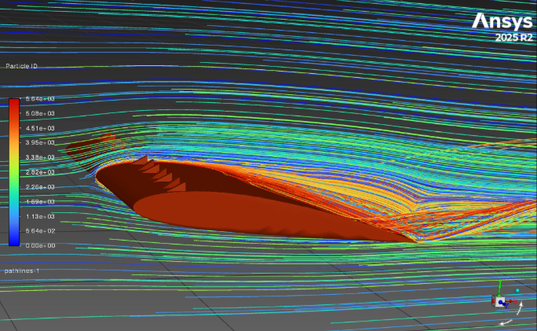
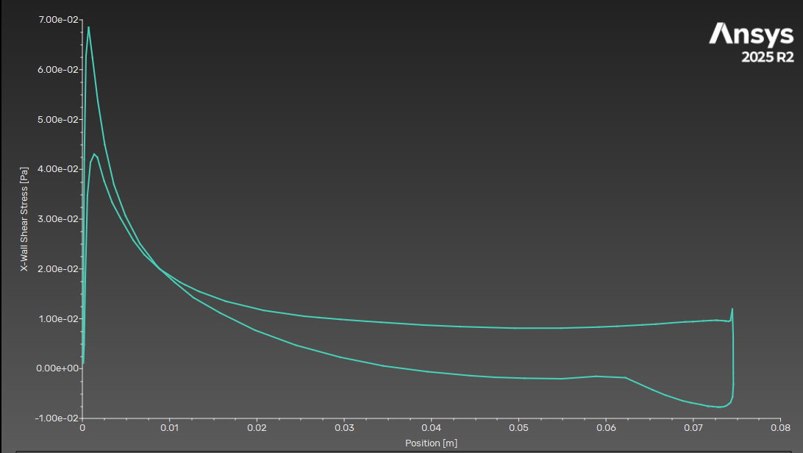
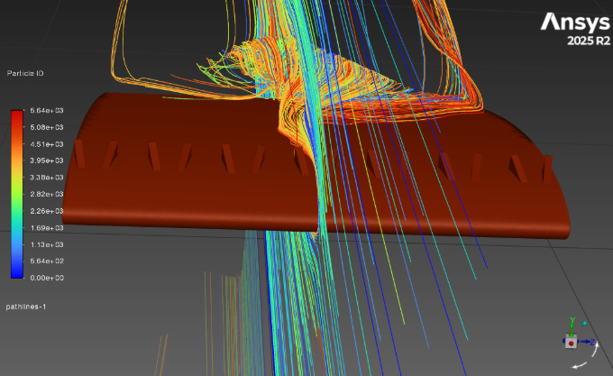

Project Overview
Research Objective
Do the CFD simulations and wind-tunnel experiments predict similar flow separation behaviour for the baseline and vortex-generator (VG) configurations?
Methodology
- Reconstructed the airfoil geometry in Fusion 360 and replicated the original wind-tunnel domain.
- Performed steady laminar simulations in Fluent with local mesh refinement around the VGs and near-wall inflation layers.
- Assessed mesh sensitivity using wall shear stress and aerodynamic coefficients, and visualized the flow using pathlines.
0.89% change in lift coefficient, 1.37% in drag coefficient, and a 1.3 mm shift in separation between the two VG meshes.
Mesh sensitivity was assessed using two meshes for one VG configuration. The experimental comparison remains preliminary.

01 · Numerical Methodology
Geometry, Boundary Conditions and Solver Setup
In the original wind-tunnel experiment, smoke visualization was used to identify the angle of attack at which flow separation reached 30% chord. Each selected configuration was simulated at its corresponding experimental criterion angle. The comparison therefore concerns separation at these operating points rather than aerodynamic performance at a common angle of attack.
| Parameter | Setting |
|---|---|
| Geometry | NACA 2412; 75 mm chord × 65 mm span. VG elements: 2 mm height × 4.8 mm length × 1 mm thickness; 4 mm spacing between consecutive VG pairs for the configuration studied. |
| Tunnel Domain | 340 mm streamwise × 120 mm high × 75 mm wide; nominal 5 mm clearance at each wingtip. |
| Operating Point | 0.84 m/s inlet along +X; geometry rotated to the configuration-specific experimental criterion angle. |
| Fluid and Model | Constant-density air: ρ = 1.225 kg/m³, μ = 1.7894 × 10−5 Pa·s; Rec ≈ 4,300. Steady, laminar, pressure-based solver; energy and gravity off. |
| Boundaries | Velocity inlet; pressure outlet at 0 Pa gauge; stationary no-slip walls on the wing, VGs, and tunnel. |
| Numerical Methods | Coupled pressure–velocity scheme; least-squares cell-based gradients; second-order pressure and second-order upwind momentum; global pseudo-time method. |
| Reference Values | Area 0.004875 m²; length 0.075 m; speed 0.84 m/s. Lift along +Y and drag along +X, integrated over the airfoil/VG walls only. |
| Convergence Monitoring | Residual histories, unsmoothed lift/drag reports (Average Over = 1), and inlet–outlet mass balance; target mass imbalance below 0.1%. |
The geometry replicates the original 3D-printed wind-tunnel model. The relatively large VG dimensions were dictated by the resolution limitations of the original printer and were retained for consistency with the experiment. Steady laminar modelling was selected as the baseline given the low chord Reynolds number and the use of a flow-straightening filter at the tunnel inlet. The confined domain and boundary conditions were chosen to reproduce the experimental setup. An additional far-field control simulation was performed to assess tunnel-confinement effects. The far-field domain used symmetry boundaries, with an upstream extent of 275 mm (approximately 3.67c), a downstream extent of 12c = 900 mm, and an extent of 5c on all remaining sides, where c is the chord length.
02 · Mesh Sensitivity
Mesh Settings and Refinement Results
For the configuration with 4 mm spacing between consecutive VG pairs, surface and volume cell sizes were reduced and the number of inflation layers was increased. Geometry, angle of attack, boundary conditions and solver settings were held constant.
| Mesh Setting | Medium | Fine | Far-Field Control |
|---|---|---|---|
| Global Minimum Size | 0.21 mm | 0.146 mm | 0.25 mm |
| Global Maximum Size | 8.5 mm | 5.95 mm | 10 mm |
| Local Curvature Minimum | 0.21 mm | 0.14 mm | 0.25 mm |
| Local Curvature Maximum | 5 mm | 3.5 mm | 5 mm |
| VG Face Target Size | 0.20 mm | 0.14 mm | N/A |
| Boundary Layers | 22 | 25 | 18 |
| Maximum Volume Cell Length | 8.5 mm | 5.95 mm | 10 mm |
Polyhedral volume meshes were generated with Smooth Transition inflation on the airfoil and VG surfaces, using a growth rate of 1.2 and a transition ratio of 0.272. No-slip conditions were retained on the tunnel walls, but dedicated inflation layers were omitted because of mesh-quality issues at the corners. Consequently, the tunnel-wall boundary layers may be under-resolved.
| Quantity | Medium | Fine | Refinement Change |
|---|---|---|---|
| Lift Coefficient, CL | 0.4030 | 0.3994 | −0.89% |
| Drag Coefficient, CD | 0.146 | 0.148 | +1.37% |
| Separation Distance | 34.5 mm | 33.2 mm | 1.3 mm upstream |
| Separation, x/c | 46.0% | 44.3% | −1.73 percentage points |
The aerodynamic coefficients and separation location showed limited sensitivity to the tested refinement. A formal discretization-error estimate was not obtained, and mesh independence was not established for all VG configurations.
03 · Results and Discussion
Comparison of CFD and Experimental Results
| Case | CL | CD | Separation | x/c |
|---|---|---|---|---|
| Control — No VG | 0.390 | 0.125 | 36.9 mm | 49.2% |
| Control — Far Field | 0.1538 | 0.077 | 33.6 mm | 44.8% |
| VG (4 mm pair spacing) — Medium | 0.4030 | 0.146 | 34.5 mm | 46.0% |
| VG (4 mm pair spacing) — Fine | 0.3994 | 0.148 | 33.2 mm | 44.3% |
Each case was evaluated at its respective experimental criterion angle; the coefficients do not represent a comparison at a common angle of attack. Separation locations were normalized by the 75 mm chord length.
The CFD simulations predicted separation at approximately 44–49% chord for the control and VG cases, compared with 30% chord in the original experiment. The similar predicted separation locations are qualitatively consistent with the experimental comparison, although CFD predicted separation roughly 14–19 percentage points farther downstream.
The consistent downstream offset suggests a possible systematic discrepancy. Potential sources include uncertainty in the experimental airspeed, geometry and angle of attack, as well as the assumed inlet velocity profile, tunnel-wall mesh resolution, visual separation criterion and steady-flow approximation. The available results do not establish airspeed uncertainty as the cause; additional sensitivity studies are required. Differences between the confined and far-field control cases also indicate sensitivity to domain confinement, a limitation of the original wind-tunnel experiment.

04 · Flow Visualization

05 · Conclusions and Limitations
Numerical Assessment
- Evaluated mesh validity and cell quality separately from solution sensitivity to refinement.
- Assessed iterative convergence using residuals, force histories and mass balance.
- Used a repeatable wall shear stress diagnostic in place of the visual separation estimate.
- Identified numerical and experimental sources of uncertainty in the separation comparison.
Limitations and Future Work
- Improve tunnel-wall boundary-layer resolution and assess sensitivity to inlet velocity.
- Investigate the oscillatory 11.5° case using transient laminar simulations. The unconverged steady-state simulation was excluded from the reported results.
Methodology references: NASA grid-convergence guidance · NASA validation assessment. All reported simulation data and figures were obtained from my Fluent simulations.